용접기사 (2011-03-20 기출문제)
1과목: 기계제작법
1. 선반에서 테이퍼를 가공하는 방법이 아닌 것은?
- 복식 공구대를 이용하는 방법
- 테이퍼 절삭장치를 이용하는 방법
- 심압대 편위에 의한 방법
- 백 기어를 사용하는 방법
(정답률: 65%)

2. 경화된 작은 철구(鐵球)를 공작물 표면에 분사하여 표면을 매끈하게 하는 동시에 피로 강도와 그 밖의 기계적 성질을 향상시키는 데 사용하는 가공방법은?
- 액체 호닝
- 숏 피닝
- 수퍼피니싱
- 래핑
(정답률: 80%)
3. 두께가 균일하지 못하고 형상이 복잡한 주물은 냉각됨에 따라 내부응력에 의한 변형되고 파손되기 쉬우므로 이것을 방지하기 위한 방법은 다음 중 어느 것인가?
- 코어 프린트(core print)
- 덧붙임(stop-off)
- 라운딩(rounding)
- 목형구배(pattern draft)
(정답률: 55%)
4. 인발가공 시 이용하는 역장력(back tension)의 설명으로 틀린 것은?
- 역장력을 이용하면 제품의 지름을 보다 정밀하게 인발가공을 할 수 있다.
- 역장력을 가할 경우 인발가공 시 마찰저항이 감소한다.
- 역장력을 가하면 실제 다이에 걸리는 정미의 인발력은 진다.
- 인발과정에서 인발력보다 작은 장력을 인발의 반대방향로 작용시키는 힘을 역장력이라 한다.
(정답률: 50%)
5. 연강판의 두께 50㎜를 압연 롤러를 통과하여 40㎜가 되었다. 압하율은 얼마인가?
- 10%
- 15%
- 20%
- 25%
(정답률: 74%)
6. 피복아크 용접의 피복제 성분 중 산화제로 사용되는 것은?
- 알루미늄
- 페로망간
- 페로실리콘
- 이산화망간
(정답률: 47%)
7. 기체를 수천도의 높은 온도로 가열하면 기체의 일부 또는 전부가 이온화되어 전자와 양자이온의 집합체가스 또는 증기 형태로 되어 도전성을 띠게 되고 매우 높은 온도 상태로 되는데 이러한 현상을 이용한 용접법은?
- 테르밋 용접
- 플라스마 아크용접
- 일렉트로 슬래그 용접
- MIG 용접
(정답률: 65%)
8. 용접재를 서로 맞대어 가압하면서 전류를 통하면 용접부는 접촉 저항에 의해서 발열이 되어 용접부가 단접온도에 도달하였을 때 축방향으로 큰 압력을 주어용접하는 방법은?
- 퍼커션 용접(percussion welding)
- 업셋 용접(upset welding)
- 프로젝션 용접(projection welding)
- 심 용접(seam welding)
(정답률: 77%)
9. 질소와 친화력이 강한 원소를 함유하는 질화용강을 질화성의 가스나 염욕 중에서 가열하여 표면에 질소를 확산 침투시키는 표면처리법은?
- 칼로라이징
- 크롬 침투법
- 화염경화법
- 질화법
(정답률: 92%)
10. 래그 커터(rack cutter)로 기어를 가공하는 공작기계에 해당하는 것은?
- 기어 호빙 머신(gear hobbing machine)
- 펠로우즈 기어 셰이퍼(fellows gear shaper)
- 마그 기어 셰이퍼(maag gear shaper)
- 브로칭 머신(broaching machine)
(정답률: 70%)
11. 단조용 프레스의 용량이 3t 이고 단조물의 유효 단면적 500mm2 인 연강재를 단조하려 한다. 이 때 프레스 기계의 효율을 80%라고 한다면 단조재료의 변형저항은?
- 13.3 kgf/mm2
- 8.5 kgf/mm2
- 36.7 kgf/mm2
- 4.8 kgf/mm2
(정답률: 31%)
12. 판금가공에서 스프링백(spring back)을 가장 옳게 설명한 것은?
- 스프링의 피치를 나타낸다.
- 판재를 굽혔을 때 굽힌 부분이 활 모양으로 되는 현상이다.
- 스프링에서 장력의 세기를 나타내는 척도이다.
- 판재를 굽힐 때, 하중을 제거하면 탄성에 의해 처음 상태로 약간 복귀되는 현상이다.
(정답률: 84%)
13. 열처리(담금질)에서의 다음 냉각제 중 냉간능력이 가장 우수한 것은?
- 비눗물
- 10% NaCl액
- 18℃의 물
- 글리세린
(정답률: 70%)
14. 밀링 분할대에서 브라운샤프형 분할 크랭크를 1회 전시키면 주축은 몇 회전 하는가?
- 40회전
- 1/40회전
- 24회전
- 1/24회전
(정답률: 75%)
15. 두께 2.5㎜이며, 지름 50㎜의 원형동판을 블래킹 하는데 필요한 최소 펀치력(전단하중)은 약 몇 kN 인가? (단, 동판의 전단저항을 250MPa라 한다)
- 34.6
- 72.1
- 98.2
- 185.6
(정답률: 44%)
16. 바이트의 경사각(rake angle)이 작을 때 나타나는 현상으로 틀린 것은?
- 표면 거칠기가 나빠짐
- 구성인선 증대
- 공구수명 증가
- 연속형 칩의 발생
(정답률: 37%)
17. 전기 도금의 반대현상으로 가공물을 양극(陽極)에 구리, 아연을 음극(陰極)에 연결하고 전해용액 중에 침지하고 통전하여 금속표면의 미소 돌기부분을 용해하여 거울면 상태로 가공하는 방법은?
- 전해연마
- 수퍼피니싱
- 전주가공
- 방전가공
(정답률: 92%)
18. 치공구(Jig&Fixture)의 특징 설명으로 거리가 먼 것은?
- 제품을 가공할 때 시간을 단축시킨다.
- 제품의 정밀도가 향상되고, 호환성이 향상된다.
- 미숙련자도 정밀작업이 가능하다.
- 제품을 검사할 때 어렵고, 복잡하다.
(정답률: 87%)
19. 축정기의 사용상 주의사항을 설명한 것으로 틀린 것은?
- 사인바의 측정은 오차를 작게하기 위하여 45° 이하에서만 측정해야 한다.
- M형 버니어캘리퍼스의 내경 측정시 작은 지름의 경우는 실제 치수보다 작게 측정된다.
- 마이크로미터의 경우 측정면에 초경합금팁이 부착되어 있어서 절삭유 등이 묻어도 제거할 필요가 없다.
- 버니어 캘리퍼스에는 측정력을 일정하게 하는 장치가 없으므로 측정 시 무리한 측정력을 주지 않도록 한다.
(정답률: 84%)
20. 래핑(lapping) 가공의 특징에 대한 설명 중 틀린 것은?
- 경면(鏡面)을 얻을 수 있다.
- 평면도, 진원도, 진직도 등 기하학적 정밀도가 높은 제품을 얻을 수 있다.
- 고도의 정밀가공은 숙련이 필요하다.
- 가공면에 랩제가 잔류하여 제품의 부식을 막아준다.
(정답률: 85%)
2과목: 재료역학
21. 그림과 같은 보의 최대 처짐을 나타내는 식은? (단, 보의 굽힘 강성 EI 는 일정 하고, 보의 자중은 무시한다.)
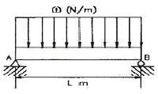
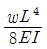
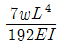
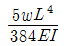
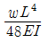
(정답률: 42%)
22. 표점길이가 400㎜, 지름이 24㎜인 강재 시편에 10kN의 인장력을 작용하였더니 변형률이 0.0001이었다. 탄성계수는 약 몇 GPa 인가? (단, 시편은 선형 탄성거동을 한다고 가정한다.)
- 2.21
- 22.1
- 221
- 2210
(정답률: 42%)
23. 그림과 같은 단순 지지보가 집중하중 P를 받을 때 굽힘 모멘트 선도는 아래 그림과 같다. A, C점에서 처짐선상에 그은 접선이 만나는 각 θ 는? (단, 보의 굽힘강성 EI 는 일정하고 자중은 무시한다.)
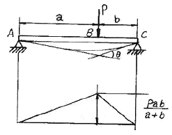
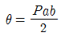
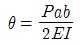
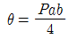
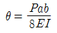
(정답률: 67%)
24. 그림과 같이 한 끝이 고정된 축에 두 개의 토크가 작용하고 있다. 고정단에서 축에 작용하는 토크는 몇 kN⦁m 인가?
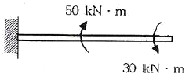
- 10
- 20
- 30
- 40
(정답률: 65%)
25. 단순보 위의 전 길이에 걸쳐 균일 분포하중이 작용할 때, 굽힘 모멘트 선도를 그리면 굽힘 모멘트 선도의 형태는 어떻게 되는가?
- 3차 곡선
- 직선
- 사인곡선
- 포물선
(정답률: 58%)
26. 다음과 같이 구멍이 뚫린 단면에서 도심위치
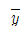
와 x-x축에 대한 단면2차모멘트 Ixx로 옳은 것은?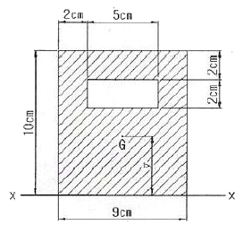
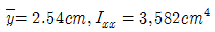
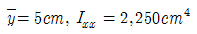
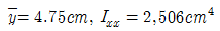
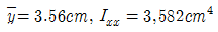
(정답률: 67%)
27. 그림과 같이 길이 l=4m의 단순보에 균일 분포하중 w가 작용하고 있으며 보의 최대 굽힘응력 σmax =85N/cm2 일 때 최대 전단응력은 약 몇 kPa 인가? (단, 보의 횡단면적 b x h = 8㎝ x 12㎝이다.)
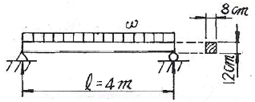
- 2.7
- 17.6
- 25.5
- 35.4
(정답률: 30%)
28. 지름 12㎜, 표점거리 200㎜의 연강재 시험편에 대한 인장시험을 수행하였다. 시험편의 표점거리가 250㎜로 늘어 났을 때, 이 연강재의 신장율(%)은?
- 10%
- 20%
- 25%
- 50%
(정답률: 58%)
29. 그림과 같은 삼각형 분포하중을 받는 단순보에서 최대 굽힘 모멘트는?
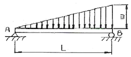
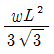
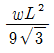
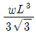
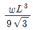
(정답률: 37%)
30. 순수 굽힘을 받는 선형 탄성 균일 단면 보의 곡률과 굽힘 모멘트에 대한 설명 중 옳은 것은?
- 보의 중립면에서 곡률반경은 굽힘 모멘트에 비례한다.
- 보의 굽힘 응력은 굽힘 모멘트에 반비례한다.
- 보의 중립면에서 곡률은 중립축에 관한 단면2차모멘트에 반비례한다.
- 보의 중립면에서 곡률은 굽힘강성(flexural rigidity)에 비례한다.
(정답률: 55%)
31. 그림과 같은 축지름 50㎜의 축에 고정된 풀리에 1750rpm, 7.35kW의 모터를 벨트로 연결하여 구동하려고 한다. 키에 발생하는 전단응력(τ)과 압축응력(σ)은 몇 MPa인가? (단, 키의 치수(㎜)는 b x h x L = 8 x 4 x 60 이다.)
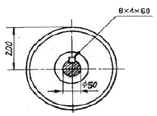
- τ = 3.34, σ = 6.68
- τ = 3.34, σ = 13.37
- τ = 4.34, σ = 13.37
- τ = 4.34, σ = 13.37
(정답률: 50%)
32. 반지름 r 인 원형축의 양단에 비틀림 모멘트 Mt가 작용될 경우 축의 양단 사이의 최대 비틀림각은? (단, 축의 길이는 L이고, 전단 탄성계수는 G이다.)
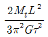
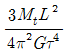
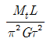
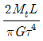
(정답률: 31%)
33. 다음 그림에서 단순보의 최대 처짐량(δ1)과 양단 고정보의 최대 처짐량(δ2)의 비 (δ1/δ2)은 얼마인가? (단, 보의 굽힘 강성 EI 는 일정하고, 자중은 무시한다.)
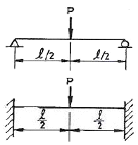
- 1/4
- 1/2
- 3/4
- 1
(정답률: 알수없음)
34. 지름이 2㎝이고 길이가 1ｍ인 원통형 중실 기둥의 좌굴에 관한 잉계하중을 오일러 공식으로 구하면 약 몇 kN 인가? (단, 기둥의 양단은 고정되어 있고, 탄성계수는 E =200GPa이다.)
- 62.1
- 124.1
- 157.1
- 186.1
(정답률: 17%)
35. 그림과 같이 단면적이 2cm2 인 AB 및 CD 막대의 B점과 C점이 1㎝ 만큼 떨어져 있다. 두 막대에 인장력을 가하여 늘인 후 B점과 C점에 핀을 끼워 두 막대를 연결하려고 한다. 연결 후 두 막대에 작용하는 인장력은 약 몇 kN인가? (단, 재료의 탄성계수는 50 GPa이다.)
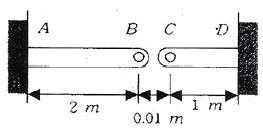
- 3.3
- 13.3
- 23.3
- 33.3
(정답률: 22%)
36. 그림의 구조물이 하중 P를 받을 때 구조물속에 저장되는 탄성 에너지는? (단, 단면적 A, 탄성계수 E는 모두 같다.)
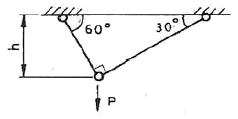
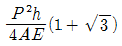
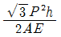
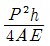
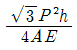
(정답률: 알수없음)
37. 중공 원형 축에 비틀림 모멘트 T=140N⦁=m가 작용할 때, 안지름이 20㎜ 바깥지름이 25㎜라면 최대전단응력은 약 몇 MPa 인가?
- 4.83
- 9.66
- 77.3
- 154.6
(정답률: 37%)
38. 단면적이 2cm2이고 길이가 4m인 환봉에 10kN의 축 방향 하중을 가하였다. 이 때 환봉에 발생한 응력은 얼마인가?
- 5000 N/m2
- 2500 N/m2
- 5x107 N/m2
- 5x105 N/m2
(정답률: 39%)
39. 판 두께 3㎜를 사용하여 내압 20kN/cm2을 받을 수있는 구형(spherical) 내압용기를 만들려고 할 때 이 재료의 허용 인장응력을 σw = 900 kN/cm2으로 하여 이 용기의 최대 안전내경 d를 구하면 몇 ㎝ 인가?
- 54
- 108
- 27
- 78
(정답률: 28%)
40. 그림과 같은 평면응력상태인 모어원에서 σx=-σy> 0 인 경우 최대 전단응력은?
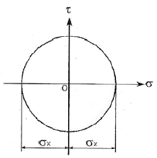
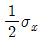
- τx-τy
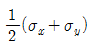
- σx
(정답률: 55%)
3과목: 용접야금
41. 어느 방향으로 소성변형을 준 금속재료에 역방향으로 소성변형을 가하면 항복점이 낮게 되는데 이 현상을 무엇이라고 하는가?
- 코트렐 효과(Cottrell effect)
- 바우싱거 효과(Bauschinger effect)
- 버거스 효과(Burgers effect)
- 스즈키 효과(Suzuki effect)
(정답률: 75%)
42. 탈산제로서 제철과정에서 철광석을 환원하는 역할을 하며 고온강도를 향상시키는 원소는?
- Ni
- P
- S
- Si
(정답률: 47%)
43. 다음 중 재결정 온도가 가장 낮은 금속은?
- W
- Cu
- Pb
- Ni
(정답률: 60%)
44. 적열취성(red shortness)의 원인을 방지하는 원소는?
- S
- Mn
- 0
- Cu
(정답률: 70%)
45. 열영향부의 야금학적 변화를 예측하려면 열영향부각 부분의 온도이력 또는 열 사이클(weld thermalcycle)을 받은 여부를 정확하게 알아야 한다. 다음 중 열 영향부의 열 사이클에서 중요한 인자가 아닌 것은?
- 가열 속도
- 최고 가열온도
- 냉각 속도
- 최초 온도
(정답률: 42%)
46. 용착부에 나타난 비금속 물질을 무엇이라고 하는가?
- 다공성
- 슬래그
- 용착금속
- 스패터
(정답률: 85%)
47. 면심입방격자의 슬립계(slip system)의 총수는?
- 4
- 6
- 8
- 12
(정답률: 58%)
48. 오스테나이트계 스테인리스강은 용접 시 냉각되면서 고온균열이 발생하기 쉽다. 주요 원인이 아닌 것은?
- 아크길이가 너무 길 때
- 크레이터 처리를 하였을 때
- 구속력이 가해진 상태에서 용접할 때
- 모재가 오염되어 있을 때
(정답률: 58%)
49. 방식별 중 부식을 방지하려는 금속을 외부전원에 연결하여 부식전류와 반대방향의 전류를 흘려 부식을 방지하는 것은?
- 산회철 피복법
- 금속 용사법
- 부식억제제 첨가법
- 유전양극 방식법
(정답률: 64%)
50. 다음 중 자기변태에서 강자성체 금속에 해당되는 것은?
- Cu, Ag
- Au, Zn
- Sb, Bi
- Fe, Ni
(정답률: 72%)
51. 조대한 조직 혹은 냉간가공 조직을 가진 강의 기계적 성질을 향상시키고, 가공조직의 균일화를 위해 미세조직으로 변화시키는 열처리법은?
- 담금질(quenching)
- 뜨임(tempering)
- 침탄법(carburizing)
- 불림(normalizing)
(정답률: 73%)
52. 다음 용융 슬래그 중 염기성 산화물은?
- SiO2
- MnO
- Fe2O3
- Al2O3
(정답률: 54%)
53. 스테인리스강 중 내식성이 가장 높고 비자성인 것은?
- 마텐자이트계 스테인리스강
- 페라이트계 스테인리스강
- 오스테나이트계 스테인리스강
- 2상 스테인리스강
(정답률: 69%)
54. 강의 뜨임처리(tempering)에 관한 설명 중 틀린 것은?
- 담금질한 강철을 급냉 시켜 재질을 경화한다.
- 담금질한 강철을 다시 재결정 온도 이하의 일정온도에서 가열한다.
- 비교적 균일하고 안정된 조직으로 변한다.
- 잔류응력을 경감 또는 제거하고 인성을 증가시킨다.
(정답률: 47%)
55. 결정립이 과냉함에 따라 결정의 성장속도(G)와 핵 발생속도(N)와의 관계로 틀린 것은?
- G가 N보다 빨리 증대할 때는 조대한 결정립이 된다.
- N의 증대가 G보다 현저할 때는 미세한 결정립이 된다.
- G와 N이 교차할 때는 조대한 결정립과 미세한 결정립의 2가지 구역으로 나타난다.
- 결정립의 대소는 G에 반비례하고 N에 비례한다.
(정답률: 55%)
56. 피복 아크 용접봉에서 피복제에 첨가하는 합금 첨가제가 아닌 것은?
- 망간
- 실리콘
- 니켈
- 산화티탄
(정답률: 34%)
57. 금속의 공동적 특성을 설명한 것으로 틀린 것은?
- 이온화하면 음(-)이온이 된다.
- 열과 전기의 좋은 양도체이다.
- 소성변형성이 있어 가공하기 쉽다.
- 비중이 크고, 금속적 광택을 가지고 있다.
(정답률: 64%)
58. 철에 침입형 고용체를 만드는 원소는?
- Mn
- Ni
- C
- Cr
(정답률: 77%)
59. 박판용접부에서 용접비드의 결정립 성장속도에 대한 설명으로 틀린 것은?
- 중심선 상에서는 용접속도와 같아진다.
- 입열량이 일정하면 용접속도에 비례하여 증가한다.
- 용접속도를 일정하게 하면 점점 불균일화의 경향을 나타낸다.
- 본드부에서 용접비드 중심선에 가까워짐에 따라 증가한다.
(정답률: 80%)
60. 아크전압이 35V, 아크전류가 200A 일 때 용접속도가 12㎝/min 이었다. 이때의 용접입열 값은 얼마인가?(오류 신고가 접수된 문제입니다. 반드시 정답과 해설을 확인하시기 바랍니다.)
- 28000 J/㎝
- 466 J/㎝
- 1⑤000 J/㎝
- 78 J/㎝
(정답률: 72%)
4과목: 용접구조설계
61. 필릿 용접이음부의 루트부분에 생기는 저온균열로 모재의 열팽창 및 수축에 의한 비틀림이 주원인으로 볼 수 있는 균열은?
- 힐 균열
- 루트 균열
- 토 균열
- 비드 및 균열
(정답률: 42%)
62. 용접구조물 설계 시 제품의 안전성, 신뢰성, 경제성, 작업성 등을 고려할 때 주의사항으로 틀린 것은?
- 용접선의 집중, 접근 및 교차시키지 말 것
- 구조상 불연속부, 단면형상의 급격한 변화가 되는 곳에 노치를 둔다.
- 용접순서는 항상 중앙에서 시작하여 밖으로 향하여 용접할 수 있게 한다.
- 단면에 직각으로 인장하중이 작용할 경우 판의 압연 방향에 주의할 것
(정답률: 45%)
63. 용접 연성 시험법이 아닌 것은?
- 샤프리 충격시험
- 코머렐시험
- 킨젤시험
- 재현 열영햘부 시험
(정답률: 45%)
64. 용접부에 발생하는 토 균열(Toe crack)의 방지대책을 올바르게 설명한 것은?
- 언더컷(Under cut)이 생기지 않는 용접을 해야 하며, 예열을 하거나 강도가 낮은 용접봉을 사용한다.
- 비드단면 형태의 나비 대 깊이의 비를 1:1~1:1.4이상 크게 유지하여야 한다.
- 용접부에 들어가는 수소 량을 가능한 적게 하고, 일단 들어간 수소를 신속히 방출시키는 대책을 수립한다.
- 저온균열과 마찬가지로 수소량 억제 등을 꾀하는 동시에 부재의 회전변형을 구속해 주거나 패스수를 적게 한다.
(정답률: 31%)
65. 인장 시험기를 사용하여 측정할 수 없는 것은?
- 단면수축율
- 연신율
- 충격값
- 인장강도
(정답률: 84%)
66. 다음 중 용접변형의 방지법이 아닌 것은?
- 억제법
- 역변형법
- 점가열법
- 냉각법
(정답률: 42%)
67. 한 부분의 몇 층을 용접하다가 이것을 다음 부분의 층으로 연속시켜 전체가 단계를 이루도록 용착시켜 나가는 방법은?
- 스킵법
- 덧살올림법
- 후진법
- 캐스케이드법
(정답률: 69%)
68. 다음 그림과 같이 완전 용입된 평판 V형 맞대기 용접이음의 굽힘모멘트 Mb = 9500 N⦁㎝가 작용하고 있을 때 최대 굽힘응력은 약 몇 N/cm2인가? (단, l = 200㎜, t = 20㎜으로 한다.)
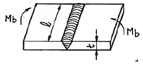
- 600.3
- 712.5
- 850.4
- 922.1
(정답률: 67%)
69. 용접변형 중 면외 변형의 종류에 속하지 않는 것은?
- 가로 굽힘 변형
- 좌굴 변형
- 회전 변형
- 비틀림 변형
(정답률: 62%)
70. 잔류 응력의 측정법 중 정성적 방법이 아닌 것은?
- 응력이완법
- 부식법
- 경도에 의한 방법
- 자기적 방법
(정답률: 40%)
71. 일반적으로 용접구조물에서의 피로강도를 향상시키는데 주의할 사항으로 틀린 것은?
- 냉간가공에 의한 기계적인 강도를 높인다.
- 열처리 또는 기계적인 방법으로 잔류응력을 완화 시킨다.
- 기계가공으로 용접부의 응력집중계수를 높인다.
- 용접부에 의력과 반대방향의 응력을 작용시킨다.
(정답률: 79%)
72. 용접부 결함의 종류 중에서 성질(특성)상의 결함에 해당되는 것은?
- 균열
- 기공
- 언더 컷
- 항목강도 부족
(정답률: 65%)
73. 용접부의 시험 중 야금학적 시험법이 아닌 것은?
- 파면 시험
- 현미경 조직 시험
- 설퍼프린트 법
- 열특성 시험
(정답률: 43%)
74. 맞대기 용접 이음의 강판 두께를 12㎜로 하고, 최대 30000N의 인장하중을 작용시킬 때 필요한 용접길이는 얼마인가? (단, 용접부는 완전용입이고, 용접부의 허용인장 응력은 100N/mm2이다.)
- 20㎜
- 25㎜
- 30㎜
- 35㎜
(정답률: 65%)
75. 용접결함 중 용착금속에 포함된 수소가 응고 후에도 방출되지 않고 금속 중에 남아 만들어진 것으로 인장, 굽힘, 파면시험 때 나타나는 물고기의 눈과 같이 빛나는 부분은?
- 은점
- 피트
- 슬래그 섞임
- 선상조직
(정답률: 82%)
76. 용접이음을 할 때 주의할 사항으로 틀린 것은?
- 맞대기 용접에서 뒷면에 용입 부족이 없도록 한다.
- 용접선은 될 수 있는 대로 교차하도록 용접한다.
- 아래보기 자세의 용접을 많이 하도록 한다.
- 필릿 용접은 피하고 맞대기 용접을 하도록 한다.
(정답률: 79%)
77. 방사선 투과 사진의 상(像)의 질을 나타내는 척도로 사용되는 것으로 가는 철사 줄로 지름이 약간씩 다른 7~10개를 같은 간격으로 나란하게 배열하여 만든 게이지는?
- 투과도계
- 계조계
- 진동계
- 전류계
(정답률: 72%)
78. TIG용접에서 V형 맞대기 이음은 판 두께 6~20㎜ 정도에 사용한다. 이 때 홈의 각도는 보통 얼마로 가공하는가?
- 20~30°
- 30~40°
- 45~55°
- 60~75°
(정답률: 50%)
79. 다음과 같은 윤상 필릿 용접의 중립축에 대한 단면 2차 모멘트 I 의 값은 약 얼마인가?
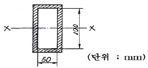
- 66.7cm3
- 666.7cm3
- 41.67cm3
- 416.7cm3
(정답률: 25%)
80. 저수소계 용접봉(E4316)에 대한 설명으로 틀린 것은?
- 용착금속은 강인성이 풍부하고 내 균열성이 우수하다.
- 용접봉은 사용하기 전에 300~350℃ 정도로 1~2시간 정도 건조시켜 사용한다.
- 피복제 중에 산화티탄(TiO2)을 약 35% 정도 포함한 용접봉으로서 슬래그 생성계이다.
- 용착금속 중의 수소함유량이 다른 용접봉에 비해 1/10 정도로 현저하게 적다.
(정답률: 54%)
5과목: 용접일반 및 안전관리
81. 가스용접 시 사용하는 가스집중장치는 화기를 사용하는 설비로부터 얼마의 간격을 유지하여야 하는가?
- 약 5m 이상
- 약 4m 이상
- 약 3m 이상
- 약 2m 이상
(정답률: 80%)
82. 산화철 분말과 알루미늄 분말을 혼합하여 발생하는 반응열을 이용하여 용접하는 것은?
- 고상 용접
- 일렉트로 슬래그 용접
- 테르밋 용접
- 플라즈마 아크 용접
(정답률: 82%)
83. 가스용접용 아세틸렌 알력조정기의 요구사항으로 맞는 것은?
- 조정기 동작이 예민하지 않아야 한다.
- 조정압력은 용기 내 가스량이 변화되면 같이 변화 되어야 한다.
- 조정압력과 방출압력의 차이가 커야한다.
- 빙결(氷結)되지 않아야 한다.
(정답률: 74%)
84. 무부하 전압이 80V, 아크 전압이 25V, 아크전류가 400A 내부손실이 4kW인 교류 용접기의 효율은 얼마인가?
- 약 88.9%
- 약 71.4%
- 약 43.8%
- 약 29.9%
(정답률: 59%)
85. 플라스마 아크 용접에 적당한 재료가 아닌 것은?
- 알루미늄합금
- 스테인리스강
- 탄소강
- 니켈합금
(정답률: 63%)
86. 용접 중 전류가 만드는 자장이 평형을 잃어버릴때 자력이 아크에 작용을 하도록 아크가 정상상태에서 벗어나 용접점 밖으로 벗어나는 현상을 무엇이라고 하는가?
- 전류불림
- 자기불림
- 아크제어
- 수하작용
(정답률: 62%)
87. 일렉트로 가스 아크 용접 시 보호가스가 아닌 것은?
- Ar
- He
- CO2
- N2
(정답률: 54%)
88. 용접부 시험의 종류 중 유황 및 유화물의 함유량과 분포상태를 검출하기 위한 시험은?
- 화학시험
- 부식시험
- 설퍼프린트시험
- 수소시험
(정답률: 93%)
89. 용접 시 전격의 방지대책을 설명한 것 중 틀린 것은?
- 용접기 내부에 함부로 손을 대지 않는다.
- 홀더나 용접봉에 맨손으로 취급해도 무방하다.
- 땀, 물 등에 의한 습기찬 보호구는 착용하지 않는다.
- 가죽장갑, 앞치마 등 규정된 보호구를 반드시 착용한다.
(정답률: 71%)
90. 내 균열성이 가장 좋은 용접봉의 피복제 계통은?
- 저수소계
- 고셀로로오스계
- 일루미나이트계
- 고산화철계
(정답률: 77%)
91. 구조상 간접가열법과 직접가열법의 2종류가 사용되며 스폿 용접이 곤란한 금속에 적당한 납땜법은?
- 저항 납땜(resistance brazing)
- 담금 납땜(dip brazing)
- 가스 납땜(gas brazing)
- 인두 납땜(soldering iron brazing)
(정답률: 34%)
92. 서브머지드 아크 용접의 장점 및 단점에 대한 각각의 설명으로 틀린 것은?
- 장점 : 용접선이 구부러져 있어도 조작이 쉽고 능률적이다.
- 장점 : 개선 각을 작게 하여 용접 패스 수를 줄일수 있다.
- 단점 : 용접진행 상태의 양(良)⦁부(不)를 확인할수 없다.
- 단점 : 적용 자세와 적용 재료의 제약을 받는다.
(정답률: 60%)
93. 용접작업 시 진공탱크가 필요한 용접법은?
- 불활성가스 금속 아크 용접
- 전자 빔 용접
- 레이저 용접
- 플라스마 아크 용접
(정답률: 75%)
94. 정격2차 전류 300A, 정격사용률 40%의 아크 용접기로써 200A의 전류로 용접한다고 가정하면 허용사용률은 얼마인가?
- 90%
- 60%
- 17.8%
- 26.7%
(정답률: 50%)
95. 불활성가스 텅스텐 아크(TIG)용접 시 비드 폭이 넓고 용입이 얕으며 산화피막을 제거하는 청정작용이 있는 전원특성은?
- 직류 정극성
- 직류 역극성
- 교류
- 용극성
(정답률: 82%)
96. 용접장비 취급 시 주의할 사항 중 잘못된 것은?
- 용접기 설치장소는 습기나 먼지가 없는 장소를 선택하고 직사광선이나 비, 바람을 피해서 설치한다.
- 용접기의 수리나 단자 연결 시에는 배전반의 개폐기가 OFF 상태인가 확인한다.
- TIG용접에서 텅스텐 봉을 연마할 때 보안경을 반드시 착용하고 숫돌 전면에서 작업한다.
- 수랭식 용접기의 냉각수 순환장치는 항시 점검하여 일정한 수위가 되도록 한다.
(정답률: 82%)
97. 용접 후 검사 결과 용접부에 기공이 발생하였다. 기공의 발생 원인으로 적당한 것은?
- 이음부에 페인트가 묻어 아세틸렌-산소 불꽃으로 태워 없애고 용접하였다.
- 장마철에 습기가 많이 있는 용접봉을 잘 건조하여 사용하였다.
- 용접 전류를 높게 하고 용접 속도를 빨리하여 용접하였다.
- 저수소계 용접봉을 사용하여 충분한 열량을 주어 용접하였다.
(정답률: 74%)
98. 산소 –아세틸렌불꽃에서 산소과잉불꽃 이라고도 불리우는 것은?
- 중성 불꽃
- 탄화 불꽃
- 산화 불꽃
- 표준 불꽃
(정답률: 75%)
99. 연강용 피복아크 용접봉에 관한 설명 중 틀린 것은?
- 일루미나이트계 용접봉은 슬래그생성계로 전자세 용접이 가능하다.
- 고산화티탄계 용접봉은 슬래그 생성계로 고온균열을 일으키기 쉬운 결점이 있다.
- 저수소계 용접봉은 강력한 탈산작용이 있으며 습기에 강하므로 사용하기 전에 건조시키면 용접 작업성이 나빠진다.
- 고셀로로오스계 용접봉은 가스실드계의 대표적인 것으로 아크는 스프레이형 아크를 발생한다.
(정답률: 79%)
100. 일반 전기회로는 오옴(Ohm)의 법칙에 따라 동일한 저항에 흐르는 전류는 그 전압에 비례하지만 아크의 경우는 그 반대로 전류가 크게 되면 저항이 적어져서 전압도 낮아지는 현상으로 일명 부특성이라고도 하는 것은?
- 수하 특성
- 정전류 특성
- 부저항 특성
- 상승 특성
(정답률: 67%)